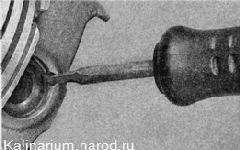
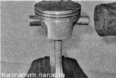
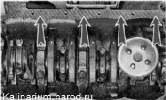
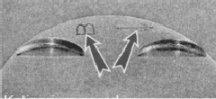
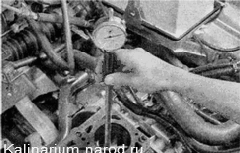
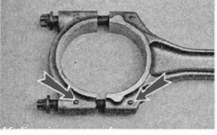

Поршень и шатун - заменаЧрезмерно изношенные поршни подлежат замене. Замена поршня и шатуна может потребоваться при соударении клапана с поршнем, вызванном нарушением фаз газораспределения или обрывом ремня привода ГРМ. Для выполнения работы потребуются нутромер и оправка для поршневых колец. Разборка 1. Снимаем с поршня поршневые кольца. 2. Шилом или отверткой с тонким лезвием поддеваем и вынимаем из проточки стопорное кольцо поршневого пальца. Если канавки стопорных колец замятые, в забоинах и кольца в них ненадежно фиксируются — поршень следует заменить. 3. Прутком из мягкого металла диаметром 16—18 мм выталкиваем поршневой палец и снимаем поршень с шатуна. 
Проверка У новых двигателей зазор между поршнем и цилиндром составляет 0,025—0,045 мм и задается установкой поршней того же класса, что и цилиндров. Класс поршня и цилиндра обозначаются латинскими буквами которые выбиваются на нижней привалочной плоскости блока цилиндров... ...и на днище поршня. Стрелка на поршне указывает направление на передний конец коленчатого вала. Как пользоваться нутромером, см. прилагаемую инструкцию или специальную литературу. 1. Нутромером проверяем износ стенок цилиндров. Измерения проводим в четырех поясах (3,10, 60 и 112 мм от верхней кромки цилиндра) в продольном и поперечном направлениях двигателя. В верхнем поясе цилиндр не изнашивается. Но разнице показаний нутромера в разных поясах определяем степень износа каждого цилиндра. 2. Микрометром измерив диаметр юбки поршня, определяем его износ. Небольшой равномерный износ цилиндра (в пределах 0,05 мм) можно попробовать компенсировать установкой поршня другого класса с большим диаметром. Если максимальный износ составляет 0,15 мм и более, требуется расточка цилиндров и установка поршней ремонтного размера. Сборка Собираем поршень с шатуном в последовательности, обратной разборке. При этом стрелка на днище поршня и метки на шатуне и его крышке должны быть обращены в одну сторону.  |